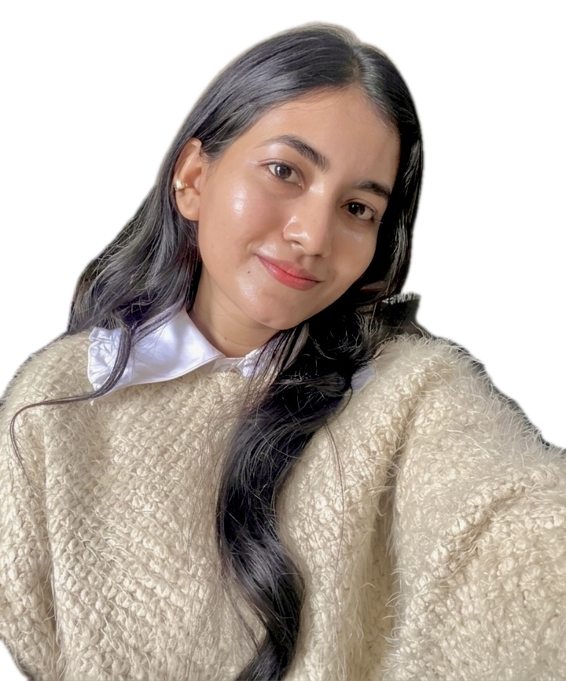
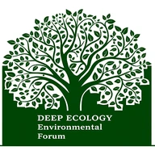

Environmental Philosophy
Deep ecology, intrinsic value and the ethics of our relationship with non-human life.
M.A. in Philosophy · Jahangirnagar University
Philosophy Researcher ·
I study how we think about nature and our place in it. My Honours research put Baruch Spinoza's metaphysics in dialogue with Arne Naess's deep ecology, asking whether a seventeenth-century picture of one interconnected reality can carry the moral weight of a modern environmental ethic.

I'm a philosophy graduate from Jahangirnagar University, now pursuing my Master of Arts in Philosophy there. I completed my B.A. (Honours) with a CGPA of 3.78 out of 4.00, placing 2nd in my batch on the overall Honours result and first in the third-year examination.
My interests sit where metaphysics meets ethics: what kind of thing nature is, and what, if anything, we owe to it. Under the supervision of Professor Dr. Md. Munir Hossain Talukder I wrote a twelve-chapter critical study of Spinoza and Arne Naess, and I am a member of the Deep Ecology Environmental Forum (DEEF), a research centre based at Jahangirnagar University. Alongside my studies I teach school and college students in Dhaka.
Deep ecology, intrinsic value and the ethics of our relationship with non-human life.
Spinoza's Ethics: substance, modes, conatus and Deus sive Natura.
Comparing philosophical systems closely, finding where they agree and where they quietly diverge.
Tutoring English-version students from primary level to higher secondary.
Arne Naess, founder of the deep ecology movement, named Spinoza as a cornerstone of his thought and listed sixteen points where the two meet. This paper tests that claim. It agrees that Spinoza's Deus sive Natura, one substance of which humans, animals and plants are all modes, breaks down the wall between people and nature. It then sets out the places where the systems pull apart, above all that Spinoza describes an amoral nature while deep ecology prescribes duties towards it.
The conclusion: deep ecology is not simply Spinoza applied to the environment but a creative transformation of him, one that gives a metaphysical picture of unity the ethical commitment needed for problems such as climate change and environmental justice.
The questions that run through my research, in brief.
For Spinoza there is one substance and everything is an expression of it. Naess saw in this a world where humans are not masters, only parts of an interconnected whole.
Spinoza's nature has no built-in "good" or "bad". Deep ecology says we ought to protect it. Turning neutral fact into moral duty is the central gap the thesis examines.
If a being's right equals its power, technology could seem to license destruction. Deep ecology reads human power the other way: the more we can do, the more we must protect.
Naess turns Spinoza's conatus, each thing's striving to persist, into Self-realization, where the "Self" widens to include the whole biosphere.
Spinoza viewed reality under the aspect of eternity. Environmental ethics needs time: evolution, the climate crisis and the claims of future generations.
Deep ecology extends intrinsic value beyond humans to all living beings, moving ethics past a purely human-centred view.
Naess took Spinoza's metaphysical map and added a moral compass to it.
— from the thesis summary

Deep Ecology Environmental Forum (DEEF) — Research Centre
Jahangirnagar University
Independent
Department of Philosophy, Jahangirnagar University, Savar, Dhaka
Department of Philosophy, Jahangirnagar University, Savar, Dhaka
CGPA 3.78 / 4.002nd in merit listShamsul Haque Khan School and College, Dhaka
GPA 5.00 / 5.00Chatkhil Pachgaon Government High School, Noakhali
GPA 4.67 / 5.00Outside philosophy, I'm a proud otaku who also loves singing and shopping.
Call me an otaku: I'm a big anime fan. A few of my favourites:
Singing is one of my favourite things to do.
Shopping is another of my favourite hobbies.
I'm open to research collaborations, graduate opportunities and conversations about environmental philosophy, Spinoza and deep ecology. Email or LinkedIn is the best way to reach me.
Dhaka, Bangladesh